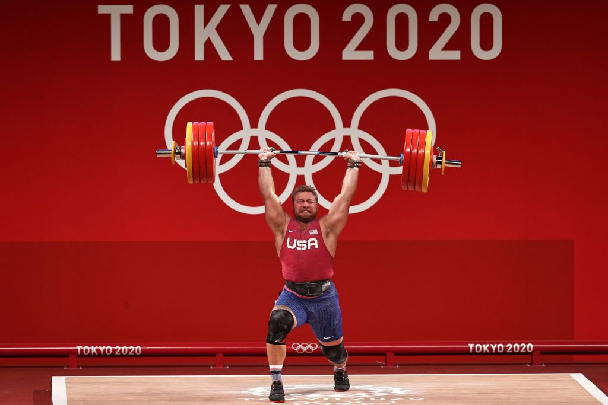
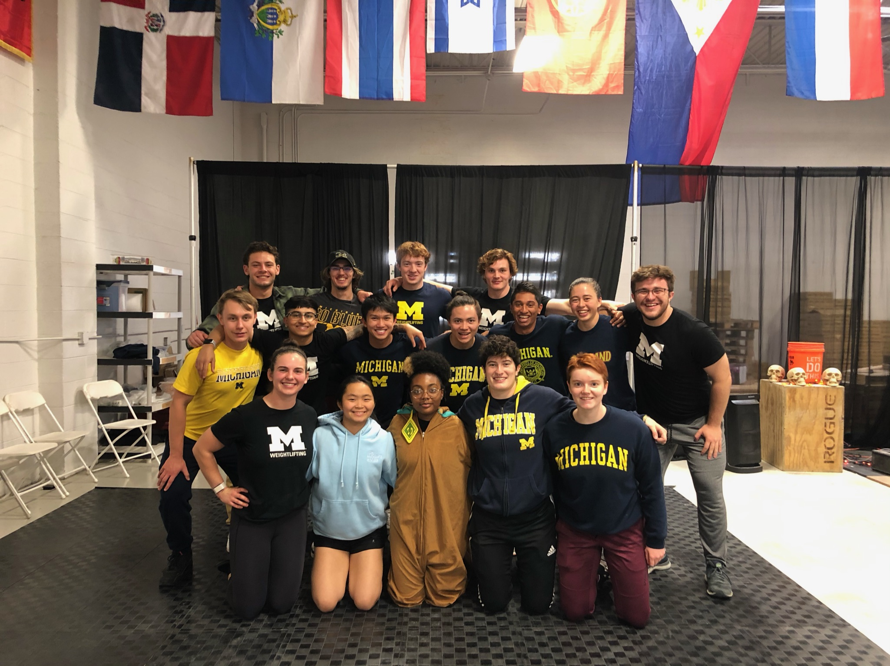

What is Olympic Weightlifting?
For thousands of years, people have been competing to see who can lift the heaviest objects. Thus, it makes sense that Olympic Weightlifting was one of the first Olympic sports when it made its official debut at the 1896 games in Athens. The sport has gone through many changes since its beginning, but currently it consists of the two main “Olympic” lifts: the Snatch and the Clean & Jerk. Men and women compete separately, divided by weight class, and get three attempts at each lift in order to determine their “total” between the two lifts.
About the Team
Founded in 2018, University of Michigan Weightlifting has graduated from a fledgling club to a university-affiliated club sport in recent years. We typically hold tryouts in September of each year, and take on lifters at different experience levels, so don’t worry if you’ve never performed the Olympic lifts before! We practice 4 days a week: Mon/Wed/Fri from 4-7 P.M., and 8-11 A.M. on Saturday Mornings. Our goal is to facilitate a competitive and disciplined environment for our athletes, while also representing the University of Michigan at both local and national level competitions.